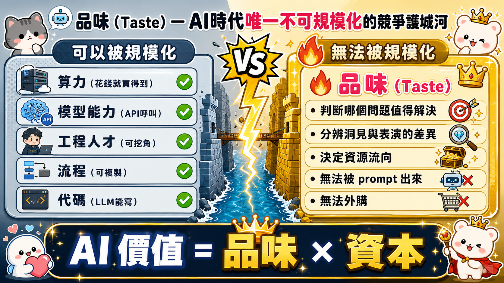
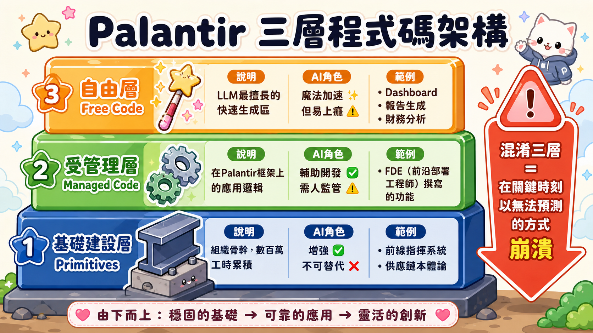
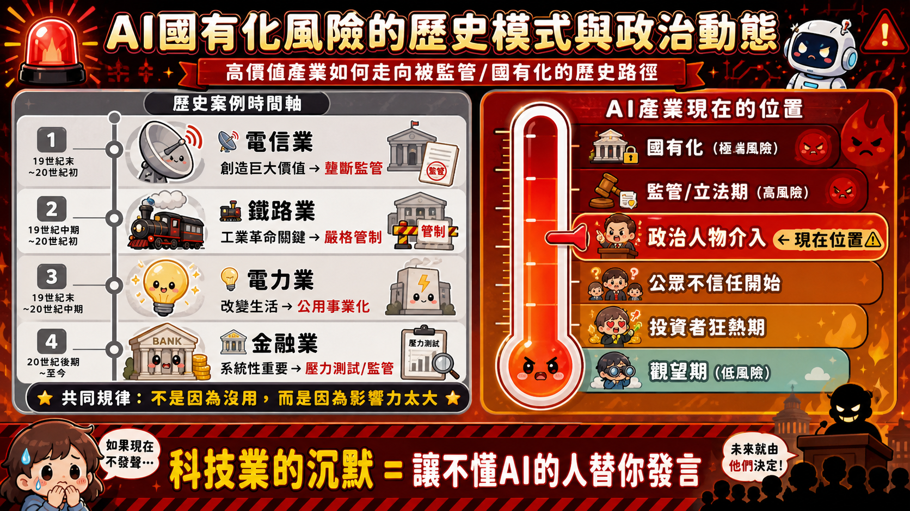

TBPN × AIPCon 10 訪談
Palantir CEO Alex Karp 論 Tokenmaxxing 與品味
一場反炒作宣言——從 AI 濫用病理學、品味護城河到 AI 國有化的迫近警告，深度導讀八個核心論點
🎙 Alex Karp × TBPN
📅 2026年6月5日
⏱ 約 23 分鐘訪談
🔍 深度導讀 8 個次主題
📌 全文摘要
這場發生在 AIPCon 10 現場的訪談，是近年來 AI 產業最罕見的「反炒作宣言」。Karp 沒有來販賣希望——他帶來的是一張診斷書，關於整個企業 AI 採用生態正在集體犯下的同一個錯誤：把工具當目的、把消耗當進步、把魅力當能力。
AI 的價值 = 品味（Taste）× 資本（Capital）
品味是那個無法外購、無法複製、無法用更多 token 替代的變數。這場對話觸及八個維度：AI 炒作的現實分水嶺、Tokenmaxxing 病理學、品味作為護城河、三層代碼哲學、LLM 魅力悖論、競爭對手意外助攻、AI 國有化的迫近警告，以及裁員敘事的政治炸彈。每一個都值得獨立展開。
次主題 01
AIPCon 現場：AI 炒作的現實分水嶺
從「也許是真的」到「真的，但不知道有什麼用」
如果你長期關注 AI 產業的演化節奏，你會發現每隔一段時間，討論的語氣就會發生一次集體轉折。最開始是謹慎的好奇，然後是爆炸性的樂觀，然後是一種奇怪的沉默——每個人都知道有什麼地方不對，但沒人敢說出口，因為說出口就等於在牌局上亮底牌。
這種沉默本身就是訊號。
AIPCon 10 標誌的是第三個階段的終結：「AI 是真的，但我不知道它在幫我解決什麼問題」這個念頭，終於開始被公開說出來了。兩週之前還是禁忌的句子——「我們的 AI 部署不太有效，但我們沒辦法公開說，因為這樣看起來很蠢」——現在開始有人願意說。不是因為狀況改善了，而是因為沉默的代價開始高過坦白的代價。
這個轉折點有一個結構性原因：投資者端和使用者端長期活在平行宇宙裡。投資者看到的是市場估值、token 消耗量、API 呼叫次數——所有看起來像是增長的指標。但坐在工廠、醫院、軍事指揮室裡的人，感受到的是一種更混亂的現實：這個東西確實很神奇，但它神奇的地方和我需要它神奇的地方不是同一個地方。
AIPCon 10 的意義，不是什麼新技術被發表，而是一種集體意識的閾值被突破了——整個產業開始進入「從炒作轉向問責」的下一個週期。而這個週期，對於真正在做基礎建設的人來說，其實是個機會。
次主題 02
Tokenmaxxing：企業 AI 濫用症候群診斷
用盡 Token 的感覺，就像讓人上癮的自我安慰
先說一個讓人不舒服的真相：大多數企業今天在做的「AI 部署」，本質上是一種組織層級的自我安慰行為。
Tokenmaxxing 這個詞，描述的是一種病理狀態——企業花費大量資源讓員工和系統持續消耗 AI token，卻沒有針對任何真實的業務問題尋找答案。你的電子郵件被分類了，你的報告有了摘要，你的會議有了逐字稿，你的 dashboard 多了三十個新視覺化圖表。但你的核心業務問題——為什麼這條產線的良率一直上不去、為什麼這個客戶群的留存率在下降——沒有任何一個被解決。
這種行為之所以如此頑固，是因為它的強化迴路設計得太完美了：它「感覺上」很有生產力。點一下，AI 給你一個整理好的摘要，你有一種「我掌握了」的錯覺。再點一下，又一個 dashboard，又一種「我理解了」的幻覺。而且它的即時回饋是零延遲的——不像真正的問題解決，需要週、月、季度的週期才能驗證成效。
更深的問題在於：整個激勵結構在鼓勵這件事。SaaS 廠商按 token 計費，所以消耗愈多對他們愈有利。員工因為「積極使用 AI 工具」而獲得考核加分。管理層把「AI 導入率」當成向董事會展示的 KPI。沒有人有動機去問那個最關鍵的問題：這些 token 消耗，對應到了哪個業務結果的改善？
⚠ 關鍵盲點
真正的業務問題需要的不只是文字生成能力，而是對特定領域的深度知識。「根據我公司特定的承保邏輯，這個客戶的風險如何定價？」——一個沒有你的知識庫、沒有你的業務脈絡的通用 LLM，根本給不了你答案。而把更多 token 砸進去，只會讓你更快地得到一個聽起來很有說服力、但其實是幻覺的答案。
Tokenmaxxing 三節點惡性循環——每一圈都在消耗資源，但核心業務問題從未被觸及
次主題 03
Taste（品味）：AI 時代唯一不可規模化的競爭護城河
如果什麼都可以被規模化，那真正稀缺的是什麼？
在一個算力可以購買、模型可以 API 呼叫、人才可以挖角、流程可以複製的時代，護城河長什麼樣子？大多數人給出的答案都沿著同一條軸線：數據飛輪、網路效應、模型參數量、推理速度、成本曲線。這些都是真實的競爭要素，但它們有一個共同的弱點：只要資本足夠，它們都是可以被複製或趕上的。
品味在這裡的定義，不是美感偏好，不是設計感，而是一種更根本的認知能力：在兩個表面上看起來都合理的選項之間，判斷哪一個真正重要 。
這種能力的稀缺性，在 AI 時代被放大到了一個新的量級。因為 AI 極大地降低了「生產」的門檻——任何人都可以快速生成大量看起來合理的東西：報告、代碼、分析、建議、流程。但它絲毫沒有降低「判斷哪個問題值得解決」的難度。
在戰場上，這意味著什麼是值得投入的情報任務，什麼是在消耗資源卻沒有戰略價值的偵察行動。在商業上，這意味著什麼樣的數據值得建立知識庫，什麼樣的流程值得用 AI 深度改造，什麼應該放在本地端保護，什麼可以放到公有雲換取數據回饋。
品味是一個組織的中樞神經系統——它決定資源流向哪裡，決定什麼問題被優先提問，決定哪些人被放在關鍵決策位置。更可怕的是：品味無法被 prompt 出來。你可以提示 AI「表現出品味」，它會給你一個聽起來很有品味的輸出。但那個輸出在面對真實業務決策時會不會 work，取決於提問者本身是否有判斷力，而不是 AI。
那些把全部注意力放在「用更多 AI、消耗更多 token、部署更多工具」的組織，正在把自己的資源投入一場商品化競賽——而商品化競賽，最終的贏家是提供商品的人，不是消耗商品的人。

左側一切皆可購買複製；右側的品味，是 AI 時代唯一不能被資本追上的護城河
次主題 04
三層代碼架構：Primitives / Managed / Free Code
不是所有代碼都值得讓 AI 寫
「LLM 讓寫代碼變得更快」——這句話是真的。但它省略了一個關鍵細節：哪種代碼？Palantir 的實踐揭示了一個被大多數企業忽略的分層認知：代碼不是同質的，不同類型的代碼對 AI 介入的敏感度完全不同，混淆它們是在自找麻煩。
🏗 第一層：Primitives（基礎建設層）
組織運作的底層骨骼——本質是對業務世界的深度理解被固化成的邏輯結構。前線指揮協調系統、供應鏈本體論、情報機構數據整合框架都屬於此層。需要幾百萬小時的技術工時加上對組織的深度理解，更像是蓋一根鋼樑。LLM 在這一層的角色是增強，而不是替代。
⚙️ 第二層：Managed Code（受管理層）
直接寫在 Palantir 產品基礎上的代碼——前沿部署工程師（Forward Deployed Engineers）在既有框架內構建的應用邏輯。這一層的關鍵在於：有人在管理它的演化路徑，確保它和底層基礎建設的一致性。
✨ 第三層：Free Code（自由代碼層）
LLM 真正發光的地方。Dashboard、財務分析模型、概率計算工具、報告生成——這些任務不需要精確，只需要「幾乎對的」，而且對錯誤的容忍度比較高。速度快、成本低、迭代容易。但也是成癮性最強的一層。
⚠ 混淆三層的代價
把 Free Code 的邏輯應用到 Primitives 層，你會得到一個表面上看起來很像的東西，但在關鍵時刻會以你無法預測的方式崩潰。這是大多數「AI 轉型失敗」案例背後共同的結構性錯誤。

三層不等高——LLM 在頂層是魔法，在底層是陷阱；混淆層次是 AI 轉型失敗最常見的結構性錯誤
次主題 05
LLM 魅力悖論：投資者愛、企業客戶冷
在最重要的客戶眼中，你是個局外人
有一個產業級別的認知錯位，正在悄悄積累成一個系統性風險：AI 前沿公司在資本市場的魅力，和它們在企業客戶市場的實際地位，正在以令人不安的速度分叉。
投資者看到的世界是這樣的：token 消耗量指數級增長、API 呼叫次數破紀錄、估值創新高、每一位財經媒體都在討論 AI 改變一切。這些數字都是真的——但它們反映的是「探索期的消耗」，不是「生產環境的整合」。
企業客戶的世界看起來完全不同。走進一家製造業的工廠、一間保險公司的核保部門、一個政府機構的採購辦公室，問問他們：「你們的 AI 工具有沒有真正改變你們的核心業務流程？」多數情況下，你得到的答案是一種微妙的沉默，然後是：「我們有在用，但……」
這種分叉的根本原因，在於前沿 AI 公司的創建者大多數從未深入理解過企業是怎麼運作的。他們知道模型訓練，知道推理優化，知道如何向投資者展示令人興奮的技術演示。但他們不知道一家石油公司的採購決策是怎麼走的，不知道一家銀行的承保邏輯有多少層監管要求，不知道軍事指揮系統的數據主權意味著什麼。
真正活在企業客戶現實裡的公司，他們的銷售邏輯是倒過來的：不主動出擊，而是讓客戶先去感受市場上那些魅力十足的替代方案的現實落地效果，然後再開門。因為在那個對比之後，客戶對「真正能 work 的東西」的渴望，遠比任何銷售話術更有說服力。
次主題 06
競爭格局哲學：抄襲者如何意外助攻 Palantir
當所有人都在複製你，市場反而長大了
常識告訴我們：競爭對手出現，市場份額就會被稀釋，情況變糟。但實際的競爭動態遠比這複雜。
以 Palantir 在國防科技領域的經驗為例：如果市場上只有一家公司在做某件事，採購方的反應不是「太好了，只有一個選擇，省事」，而是「這個市場太不成熟，風險太高，我們先觀望」。一個只有一個玩家的市場，在採購邏輯上等同於一個沒有市場的市場。
競爭對手的進入，做了三件事：① 擴大市場的定義邊界 ——當五十家公司都在說「AI 可以改變國防採購」，這個命題從一個怪人的主張變成一個共識，整塊餅變大了。② 建立比較參照點 ——在多個方案之間做比較，真正有底層基礎建設的公司優勢才能被凸顯。③ 提高整個產業的標準 ——這個提高的標準，反而更有利於長期做正確事情的公司。
更深的點在於：這些競爭者中，有很大一部分並不知道自己在複製什麼。外觀可以複製，但底層的組織能力不能。一個真正深入整合進組織的系統，背後有三年的理解積累，有無數次在現場失敗和調整的歷史，有對那個組織特有文化和決策邏輯的適應——等到競爭者意識到他們複製的只是外殼，整個世界已經再次往前移動了。
次主題 07
AI 國有化警告：六個月前就開始打電話
沒有人願意聽，直到火燒到他們腳邊
最近六個月，Karp 每隔幾天就打一通電話，對象是全球各地科技產業最有影響力的人，傳遞同一個訊息：我們即將被國有化。
回應是什麼？笑聲。然後是一種彬彬有禮的否定：「這不可能在美國發生。我們這麼受歡迎，我們創造了這麼多價值，為什麼有人要國有化我們？」
🚨 結構性警告
「我們創造很多價值」和「我們不會被監管」之間，沒有因果關係。歷史上被嚴格監管甚至國有化的產業，很多都在那個時間點創造了巨大的社會價值——電力、鐵路、電信、金融。它們被管制，不是因為它們沒用，而是因為它們的影響力已經大到普通公民開始感受到自己沒有能力對抗它，政治上就會有人填補這個訴求。
AI 正在走向這個臨界點，而且速度比上一次任何產業都快。風險不一定來自直接的國有化立法。更可能的路徑是：先被那些不理解這個技術的政治人物制定監管框架，在各種出於誤解的限制下，創新能力被閹割，而實際的問題沒有被解決，民眾的不滿也沒有被安撫。這是一個雙輸的結局。
這個動態的深層原因，在於科技業長期以來的一個集體選擇：向資本市場展示的語言，和向普通公民解釋「這對你有什麼用」的語言，完全不是同一套。這個缺口，被越來越多不信任科技業的人填滿了。

高價值產業被監管的歷史規律一再重演——AI 產業的政治風險指針，已指向「政治人物介入」的危險區
次主題 08
AI 與勞動力：裁員敘事的政治炸彈
你在用 AI「提高效率」，但你說出口的方式，可能正在引爆一顆炸彈
過去一年，科技業出現了一個危險的話語模式：公司宣布裁員，然後在同一份新聞稿裡提到 AI 投資增加。某些案例裡，CEO 直接說「AI 讓我們能夠以更小的團隊做更多事」。
這個敘事，在企業財務邏輯上也許是真的，但在政治邏輯上是一顆定時炸彈。問題不在於 AI 是否真的讓組織更有效率（它確實可以），而在於「宣稱用 AI 裁掉三分之二員工」這個行為，在大眾的理解框架裡意味著什麼。一旦這個框架被建立，它就會以政治能量的形式釋放出來，推動那些對科技業抱持敵意的政策制定者。
在真正有效整合 AI 的組織裡，發生的不是「用 AI 取代人」，而是「用 AI 讓每個人做更重要的事」。軍隊裡，高職訓背景的士兵能夠做到以前只有高度專業分析師才能做的情報判斷。工廠裡，維修技術員能夠即時獲得過去需要打電話找顧問才能取得的設備診斷資訊。這是一個完全不同的敘事。
企業領導者需要做的選擇，不只是「要不要用 AI」，而是「用什麼語言描述我在用 AI 做什麼」。說錯話的代價，可能遠比想象中高得多——它不會讓你的公司倒閉，但它可能讓你所在的整個產業，在下一個政治週期裡面對無法預測的監管衝擊。
🔚 全文總結
這場訪談的表面主題是 Tokenmaxxing 和品味，但如果你把全部八個維度放在一起看，會發現它們其實在說同一件事：AI 時代的真正競爭，不在技術端，而在判斷端。
技術會被商品化。算力會被商品化。模型的推理能力會被商品化。但判斷力——知道哪個問題值得解決、知道如何向不同受眾解釋複雜事物的價值、知道在組織裡把對的人放在對的位置——這些不會被商品化。
那些正在快速追逐 AI 浪潮的組織——不管是前沿 AI 公司、企業客戶、還是政策制定者——面臨同樣的根本問題：你在用多少資源提升算力，又在用多少資源提升判斷力？
如果兩者差距太大，你得到的不是 AI 轉型，而是一個更快速的決策機器，在加速錯誤的方向上前進。
而加速，有時候只是讓你更快地到達一個你不應該去的地方。
以下為原始英文訪談的繁體中文台灣用語版本，依照說話節奏分段整理，保留對話語感，並對口頭禪與重複語句做適度精簡，以提升閱讀流暢度。
開場 · 訓練閒聊
主持人
過來靠近一點，感覺不錯。最近怎麼樣？這次 AIPCon 有什麼不同？
Alex Karp
我們正處於一個新階段，每一場活動都代表著一個時間點。首先，你們看起來更成功了。
主持人
謝謝，謝謝。你看起來更壯、更高大了。你現在個人生活更受歡迎嗎？
Alex Karp
我現在專注的是懸吊訓練（dead hang）。
Alex Karp
最近幾個月停滯在五分三十秒。懸吊訓練最常見的錯誤是每天練。你需要恢復期。我的做法是一週一次，吊到極限就好。比如你能吊兩分鐘，就努力到一分三十秒，不需要逼到兩分鐘。那天做完就結束，隔天隨便活動。等到下一次懸吊日前兩天，做四組各十五秒暖身，前一天完全休息。就這樣持續下去，成績會進步。
主持人
一分三十秒很值得尊敬了。兩分鐘是超級精英等級。
Alex Karp
但當你有五分三十秒的時候，一分三十秒感覺不怎麼樣。另外部分是天賦——我其他指標都是精英，但懸吊這個項目對我來說像是異次元。
AI 炒作 · 現況診斷
Alex Karp
我來說說兩次見面之間的變化。我們第一次見面時，AI 還在「也許是真的」這個階段。然後大概直到兩週前，還有一種感覺是「哇，這真的是真的，但不知道為什麼就是沒什麼用」——不過沒人敢公開說，因為說了顯得很蠢。投資者那邊的炒作持續，還有很多人在大灑幣。一邊是投資者，另一邊，人們開始意識到 AI 是真的，但整個 tokenmaxxing 的現象出來了，大家也開始識破了。然後你還有一個政治狀況——就是有些完全不懂基本經濟學的人，在政治辯論中取得了話語權。
主持人
我們一塊一塊來談。先從 tokenmaxxing 開始。說說什麼是真實的。Palantir 對 token 消耗的哲學是什麼？
Tokenmaxxing · 企業 AI 濫用
Alex Karp
我們有一個內部叫法不同的產品，對外的定位是幫你脫離自我意淫狀態。就是人們整天坐在那裡刷 AI，像色情上癮一樣。企業會說：「我們知道這會創造價值，但我們不能讓員工這樣——有人只是用 AI 查天氣，在重新排列自己泰坦號上的桌椅。」
主持人
真的就像成癮——工具形狀的東西，你看的比你想要的還多，希望沒人發現，有點像晚餐前偷偷看。而且感覺有生產力——每封郵件都被分類了。
Alex Karp
事情的本質是這樣的：業務問題，有時候確實可以靠多砸錢解決，但通常反過來才對——更常見的情況是你必須先想清楚正確的做法，才用資本去驅動那個過程。讓我給你一個可能對你們過於慷慨的比喻：是「品味加上資本」。
Taste · 品味護城河
Alex Karp
沒有任何 AI——你看任何問題，tokenmaxxing 也好、部署代碼也好、有沒有人要建本體論也好、為什麼政治階層不懂 AI 尤其是歐洲——這些東西都可以被規模化，以很有價值但最終會商品化的方式。但你沒辦法規模化「品味」——就是那個「這個業務問題值得解決」的判斷力。不管是烏克蘭在打仗的人、以色列人、還是商業實體，都有人坐在那裡說「這個問題有價值，那個沒有」。而且一旦判斷出那個有價值的問題，它幾乎都有某些屬性。
Alex Karp
有些問題你可以靠通用 AI 解決——比如我想寫一份關於中國 GDP 增長的報告，沒問題。但如果是需要知識庫的問題，比如我想了解我特有的核保方式、我特有的採油鑽探方法——既合法又合乎倫理，還能降低生產成本——或者改變我的供應鏈，不管是軍事的、製造業的、還是汽車業的——這些都需要真正精準的持續流程。它們被大型語言模型增強了，但沒有被取代。
LLM 魅力悖論 · 投資者 vs 企業客戶
Alex Karp
然後你還有一個大家都低估的東西——魅力（charisma）。這不是全球性的。現在，大型語言模型的前沿公司對投資者超級有魅力——告訴你一個消息，他們對企業客戶完全沒有魅力。
Alex Karp
每家公司都有自己的秘密銷售方式。你知道我的秘密銷售方式是什麼嗎？就是根本不打電話。別來找我們談。去找那家前沿公司，和他們在一起兩天。如果你夠幸運，做完之後我才讓你進我的門。他們就像搶破頭一樣，說「我接受你的爛品牌」——雖然我們在企業界品牌其實很好。這就像秘密知識，因為投資者愛這個，說「我的股票都漲了，一切都在漲」。但你走到街上，和海軍陸戰隊員談、和公車司機談、和公車公司老闆談，他們不開心，不喜歡這些 AI 公司。那些 tokenmaxxing 的行為看起來就像自我意淫，還讓他們花了錢。
Alex Karp
Palantir 大概有五千萬到一億的全球粉絲，同時也有大約五百萬人每天早起就把我叫做撒旦。這就是兩極化的意思——兩邊都有。社群媒體公司也有同樣的問題，每個人都用，但沒人喜歡。但他們活在自己的圈子裡，那個圈子在印鈔票，所以剛賺了一大筆的時候，照著鏡子還挺清爽的。
三層代碼架構 · Primitives / Managed / Free
主持人
這個技術的某些元素——就說 LLM 吧——是不是已經神奇到，讓那些製造和販賣前沿智能的公司，即使在很多事情上做得很爛，也還能持續成長？
Alex Karp
他們在某一類事情上確實很神奇，比如讓你寫代碼。但那代碼不能當作知識庫用。從三個角度看代碼，就用 Palantir 自己為例：
第一種，基本上是基礎建設。烏克蘭人在用什麼？國防部在用什麼？很多企業在用什麼？我們稱之為 primitives（基礎元件） ——基本上是硬編碼的東西，以深度理解世界的方式運作。要建立這個需要幾百萬個技術工時，更像是「怎麼蓋一根鋼樑」的問題。
第二種，是前沿部署工程師（FDE）寫的代碼——我們稱之為 managed code（受管理代碼） 。它之所以運作，秘密在於它是在我們的產品平台上被管理的。你是在寫我們的代碼庫，我們在管理和增強，不是隨機有人在寫。
第三種，是 free code（自由代碼） 。這才是神奇的地方。你可以做得很快，幾乎是對的，不需要完全精確——儀表板、財務資料、概率計算，大約分析一次就夠。這才是真正的魔法。而且我知道大家不喜歡那個比喻，但它也是會上癮的——就像對你不好，但感覺沒什麼大不了的，你就一直用下去，如果你還在這個圈子裡，你也在賺錢。另外在某些圈子裡，它本質上就是一種宗教，對那些從來沒有過宗教信仰的人特別有魅力，那個空洞突然被填滿了。
Alex Karp
但它沒有在解決企業真正面臨的問題——現在可以解決，這才是關鍵。這不是非黑即白的。沒有 LLM，沒有人會來談我們的本體論、談 Apollo 管理安全漏洞、談我們把企業變成前沿部署工程師組織的能力。這些部署代碼，我們很喜歡，因為現在每家公司都想要。怎麼做到？在 Palantir 上重新建平台，而且真的有效。不是那種沒品味、從來沒做過企業、完全不知道這些東西怎麼運作，就在那邊幻想自己知道怎麼做的人。
競爭格局 · 抄襲者的意外貢獻
主持人
這個時刻對你來說是不是有點娛樂性？因為你們一直在深層理解企業，一直在做那些人們承諾 AI 能做到的事，做了二十年，真的走過所有粗糙的邊界，而且不需要過度推銷技術。但現在有數百億美元進來做 Palantir 在做的事，只是只賣智能的部分……
Alex Karp
他們在做兩件事——試著賣智能的部分，同時假裝只要雇一堆人到處跑就能做到前沿部署工程師做的事。非常酷的地方是，當你一直在地下室做自己的事，所有人把你當奇怪展覽品，看到被人採用真的很有趣。很諷刺的是，現在採用的人有一半根本不知道自己在複製。複製這件事有利有弊——不利的地方是一開始在市場上製造雜音。但在國防科技，我們看到一個現象：沒有另外五十家公司在做類似的事，我們在純政府端的表現不會這麼好。因為採購方面對只有一個玩家，會說「市場太不成熟，先觀望」。
Alex Karp
競爭對手做了三件事：第一，擴大市場——整塊餅變大了；第二，建立比較基準——真正認真的人就買我們了；第三，提高整個產業的標準。你現在看到的就是這個效應放大一百倍。
品味 · 不可複製的核心
Alex Karp
核心的事情，就算你懂那套打法也無法開發出來的，是這個神奇的東西叫做品味。你們做得這麼好的原因，當然有能力和勤奮，但你必須能夠區分：商場上有兩個人，一個說了一些聽起來奇怪但其實很有洞察力的話，另一個說了一些聽起來奇怪但只是在表演。很少人能做到這個區別。
Alex Karp
成功的企業都有一個品味仲裁者。在 Palantir，每個產品都有品味，每個部署都有品味，每個選角都有品味。誰放那個位置？怎麼放？怎麼組織？我們的本體論技術上做到這些。什麼數據集應該進來？保護的方式是什麼？什麼應該推到公有雲？什麼應該留在本地端？你想保護什麼？不應該保護什麼？——因為有時候你想要那些東西出去，才能獲得更多數據。所有這些都靠品味仲裁，然後你還要有品味的信用度。這對很多公司是真正的問題，因為他們在朋友圈裡很受歡迎，但真的不知道在企業界有多不受歡迎。
AI 國有化警告
Alex Karp
對任何在聽的人，我要說一件事：如果你在聽這個卻沒有積極行動——我不是說你要同意我的政治立場——但我六個月前開始打電話給全球各行各業最有影響力的人，每隔幾天告訴他們：「我們將要被國有化。」他們的反應是：「這不可能在美國發生。為什麼有人要國有化我們？我們這麼受歡迎，創造了這麼多價值。」
Alex Karp
好，我不打算爭辯那個。但我告訴你，這件事的動能是在支持國有化那邊的。如果我們不趕快說清楚「這裡有問題，我們要處理，這些東西會創造機會，但你必須公開談論它們的價值，因為我們有敵對方」——就行不通了。對 Palantir 和很多公司的主要風險是：在被國有化之前，會先被不懂這個技術的人監管。他們在私下說「我在努力、我在做遊說」，這樣是行不通的。
Alex Karp
在一個一切都在改變的世界裡，我們難道不需要找一種共同結構，讓我們記得我們是美國人嗎？你不喜歡我「大家去公園待一週」的想法？好，想出另一個辦法。右派和左派，都有完全不知道自己在說什麼的人，說的都只是他們有多恨我們。而理智的中間派太多人在輕鬆躺平，覺得國有化不可能發生。這是在夢遊，而你們有利益要保護，應該站在最前線。
AI 與勞動力 · 裁員敘事的政治風險
主持人
最後一個問題。你和財星五百大 CEO 們談人員規劃的對話進展如何？過去一年裁員這麼多，大家說「我們從 AI 獲得了很多，可以這裡縮、那裡減」。這些對話是什麼狀況？
Alex Karp
我和財星五百大公司談，和工會談，和士兵談，和消防員談——如果你讓一個人升級技能，他們更有價值。不管是在電池廠工作的人、開卡車的人、企業領袖，這就是我認為我們在企業端必須非常小心、更有紀律的地方。如果你到處宣稱 AI 讓你能夠解雇三分之二的員工，而這樣做也許是因為競爭對手在打你——那你還不如直接去簽伯尼．桑德斯的宣言。
Alex Karp
這些人真的相信這件事不會發生，所以他們在搭便車。但已經完全行不通了。這些事情非常易燃。美國人感覺到這裡有某種危險。當人們在玩火，以為火不會燒到自己的手——這不是我們所處的世界，這場火會吞噬我們。
Alex Karp
士兵更有價值了，我不只是說特種作戰部隊，那顯然是另一個層次，而是做很多行動的人，現在都在用我們的產品，他們是高職學歷。你到處都看得到這個現象。現代企業將會有——一個非常聰明的主管，然後是有品味的、非常有才能、有創意的人，遍布整個架構的每個層級。
結語
Alex Karp
很高興再次聊到，一直都很有趣。